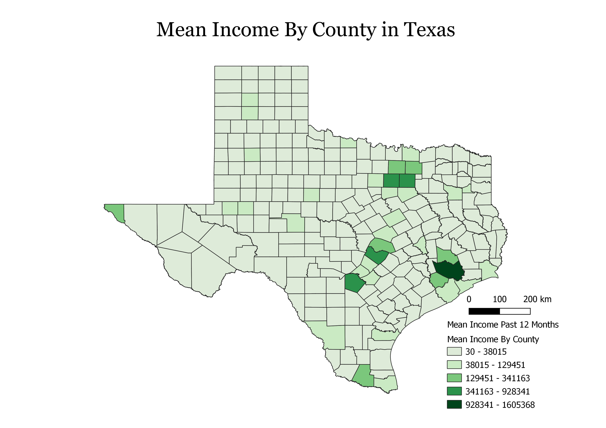

The map shows the 5 year estimate of the mean income for all Texas counties based on the mean income of the past 12 months.
It was calculated in 2019 and has been adjusted for inflation at that time.
Harris County, Dallas County, Tarrant County, Bexar County, and Travis County have some of the biggest cities in the state with Houston, Dallas, Fort Worth, San Antonio, and Austin respectively and those counties have the highest mean income in the state.

Map of Texas Counties
CSV file containing income data.